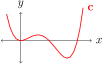

Subsection 1.1.1 Three different sets
We start by playing a game. Recall that in mathematics, a set \(X\) is just a collection of distinct objects. We call these objects the elements of \(X\text{.}\)
I am going to show you three different sets, and you need to tell me the properties that they all have in common.
The first set, \(A\text{,}\) is defined to be the set of all ordered pairs \((x,y)\) where \(x\) and \(y\) are real numbers.
Let us pause for a second and translate this definition from English into mathematical symbols. The translation is:
\begin{equation}
A := \{ (a_1,\, a_2) : a_1,a_2 \in \mathbb{R} \} \text{.}\tag{1.1.1}
\end{equation}
The \(:=\) stands for ‘is defined to be’. The \(\{\) and \(\}\) symbols stand for ‘the set of all’. The lone colon \(:\) stands for ‘where’ or ‘such that’. The comma in between \(a\) and \(b\) stands for ‘and’. The \(\in\) stands for ‘an element of’. And \(\mathbb{R}\) stands for the set of all real numbers.
Well done — you are learning the language of mathematics!
An element of \(A\) is an arbitrary pair of real numbers \(\ve{a} = (a_1, \, a_2)\text{.}\) For instance, \((1, \, 2) \in A\) and \((3.891, \, e^\pi)\) are elements of \(A\text{.}\) Note also that I am using a boldface \(\ve{a}\) to refer to an element of \(A\text{.}\) This is so that we can distinguish \(\ve{a}\) from its components \(a_1\) and \(a_2\text{,}\) which are just ordinary numbers (not elements of \(A\)).
We can visualize an element \(\ve{a}\) of \(A\) as a point in the Cartesian plane whose \(x\)-coordinate is \(a_1\) and whose \(y\)-coordinate is \(a_2\text{:}\)
\(\ve{a} \xmapsto{\text{visualize as}} \)
The second set, \(B\text{,}\) is defined to be the set of all ordered real triples \((b_1, \, b_2, \, b_3)\) satisfying \(b_1 - b_2 + b_3 = 0\text{.}\) Translated into mathematical symbols,
\begin{equation}
B := \{ (b_1, \, b_2, \, b_3) : b_1, b_2, b_3 \in \mathbb{R} \mbox{ and } b_1 - b_2 + b_3 = 0\} \text{.}\tag{1.1.2}
\end{equation}
For instance, \((2,3, 1) \in B\) but \((1,1,1) \notin B\text{.}\) We can visualize an element \(\ve{b}\) of \(B\) as a point in the plane in 3-dimensional space carved out by the equation \(x-y+z = 0\text{:}\)
\(\ve{b} \xmapsto{\text{visualize as}} \)
The third set, \(C\text{,}\) is the set of all polynomials of degree 4. Translated into mathematical symbols,
\begin{equation}
C := \{ \mbox{polynomials of degree \(\leq 4\)} \}\text{.}\tag{1.1.3}
\end{equation}
Recall that the degree of a polynomial is the highest power of \(x\) which occurs. For instance, \(\ve{c} = x^4 - 3 x^3 + 2x^2\) is a polynomial of degree 4, and so is \(\ve{p} = 2x^3 + \pi x\text{.}\) So \(\ve{c}\) and \(\ve{p}\) are elements of \(C\text{.}\) But \(\ve{r} = 8x^5 - 7\) and \(\ve{s} = \sin(x)\) are not elements of \(C\text{.}\) We can visualize an element \(\ve{c} \in C\) (i.e. a polynomial of degree 4) via its graph. For instance, the polynomial \(\ve{c} = x^4 - 3x^3 + 2x^2 \in C\) can be visualized as:
\(\ve{c} \xmapsto{\text{visualize as}} \)

There you have it. I have defined three different sets: \(A\text{,}\) \(B\) and \(C\text{,}\) and I have explained how to visualize the elements of each of these sets. On the face of it, the sets are quite different. Elements of \(A\) are arbitrary points in \(\mathbb{R}^2\text{.}\) Elements of \(B\) are points in \(\mathbb{R}^3\) satisfying a certain equation. Elements of \(C\) are polynomials.
What features do these sets have in common?
Subsection 1.1.2 Features the sets have in common
I want to focus on two features that the sets \(A\text{,}\) \(B\) and \(C\) have in common.
Subsubsection 1.1.2.1 Addition
Firstly, in each of these sets, there is a natural addition operation. We can add two elements of the set to get a third element.
In set \(A\text{,}\) we can add two elements \(\ve{a} = (a_1, \, a_2)\) and \(\ve{a}' = (a_1', \, a_2')\) together by adding their components together, to form a new element \(\ve{a} + \ve{a}' \in A\text{:}\)
\begin{equation}
\underbrace{(a_1, \, a_2)}_{\ve{a}} + \underbrace{(a'_1, \,a'_2)}_{\ve{a}'} := \underbrace{(a_1 + a_1', \, a_2 + a_2')}_{\ve{a} + \ve{a}'}\label{add_in_A}\tag{1.1.4}
\end{equation}
For instance, \((1, \,3) + (2, \,-1.6) = (3, \,1.4)\text{.}\) We can visualize this addition operation as follows:
We can do a similar thing in set \(B\text{.}\) Suppose we have two elements of \(B\text{,}\) \(\ve{b} = (b_1, \,b_2, \,b_3)\) and \(\ve{b}' = (b_1', \, b_2', \, b_3')\text{.}\) Note that, since \(\ve{b}\in B\text{,}\) its components satisfy \(b_1 - b_2 + b_3 = 0\text{.}\) Similarly the components of \(b'\) satisfy and \(b_1 - b_2 + b_3 = 0\text{.}\) We can add \(\ve{b}\) and \(\ve{b}'\) together to get a new element \(\ve{b} + \ve{b}'\) of \(B\text{,}\) by adding their components together as before:
\begin{equation}
\underbrace{(b_1, \, b_2, \, b_3)}_{\ve{b}} + \underbrace{(b'_1, \,b'_2, \, b'_3)}_{\ve{b}'} := \underbrace{(b_1 + b_1', \, b_2 + b_2', \, b_3 + b'_3)}_{\ve{b} + \ve{b}'}\label{new_add_in_B}\tag{1.1.5}
\end{equation}
We should be careful here. How do we know that the expression on the right hand side is really an element of \(B\text{?}\) We need to check that it satisfies the equation ‘the first component minus the second component plus the third component equals zero’. Let us check that formally:
\begin{align*}
(\ve{b} + \ve{b}')_1 - (\ve{b}+\ve{b}')_2 + (\ve{b}+\ve{b}')_3 \amp = (b_1 + b'_1) - (b_2 + b'_2) + (b_3 + b'_3)\\
\amp = (b_1 - b_2 + b_3) + (b'_1 - b'_2 + b'_3)\\
\amp = 0 + 0\\
\amp = 0\text{.}
\end{align*}
We can visualize this addition operation in \(B\) in the same way as we did for \(A\text{.}\)
There is also an addition operation in set \(C\text{.}\) We can add two polynomials together algebraically by adding their corresponding coefficients:
\begin{gather}
[c_4 x^4 + c_3 x^3 + c_2 x^2 + c_1 x^1 + c_0] + [d_4 x^4 + d_3 x^3 + d_2 x^2 + d_1 x^1 + d_0]\notag\\
:= (c_4 + d_4) x^4 + (c_3 + d_3) x^3 + (c_2 + d_2) x^2 + (c_1 + d_1) x^1 + (c_0 + d_0)\label{add_in_C}\tag{1.1.6}
\end{gather}
For instance,
\begin{equation*}
[2x^4 + x^2 - 3x + 2] + [2x^3 - 7x^2 + x]
= 2x^4 + 2x^3 - 6x^2 -2x + 2\text{.}
\end{equation*}
There is another way to think about the addition of polynomials. Each polynomial \(\ve{c}\) can be thought of as a function, in the sense that we can substitute an arbitrary value of \(x\) into the polynomial \(\ve{c}\text{,}\) and it will output a number \(\ve{c}(x)\text{.}\) For instance, if \(\ve{c}(x) = 3x^2 - 1\text{,}\) then \(\ve{c}(2) = 11\text{.}\) If we think of polynomials as functions in this way, then the addition \(\ve{c} + \ve{d}\) of two polynomials can be thought of as the new function which, when you substitute some number \(x\) into it, outputs \(\ve{c}(x) + \ve{d}(x)\text{.}\) Written mathematically,
\begin{equation}
(\ve{c} + \ve{d})(x) := \ve{c}(x) + \ve{d}(x)\label{add_in_C2}\tag{1.1.7}
\end{equation}
Thinking in this way, we can visualize the graph of \(\ve{c} + \ve{d}\) as the graph of \(\ve{c}\) added to the graph of \(\ve{d}\text{:}\)
Subsubsection 1.1.2.2 Zero element
In all three sets \(A\text{,}\) \(B\) and \(C\text{,}\) there is a specific element (the zero element) \(\ve{0}\) which, when you add it to another element, leaves that element unchanged.
In \(A\text{,}\) the zero element \(\ve{0}\) is defined by
\begin{equation}
\ve{0} := (0,0) \in A\text{.}\label{zero_in_A}\tag{1.1.8}
\end{equation}
When you add this point to another point \((a_1, \, a_2) \in A\text{,}\) nothing happens!
\begin{equation*}
(0, \,0) + (a_1, \, a_2) = (a_1, \, a_2)\text{.}
\end{equation*}
Do not confuse the zero element \(\ve{0} \in A\) with the real number zero, \(0 \in \mathbb{R}\text{.}\) This is another reason why I am using boldface! (You should use underline to distinguish them.)
In \(B\text{,}\) the zero element \(\ve{0}\) is the point \((0,0,0) \in B\text{.}\) When you add this point to another point \((u_1, u_2, u_3) \in B\text{,}\) nothing happens!
\begin{equation*}
(0, \, 0, \, 0) + (u_1, \, u_2, \, u_3) = (u_1, \, u_2, \, u_3)\text{.}
\end{equation*}
In \(C\text{,}\) the zero element \(\ve{0}\) is the zero polynomial. If we think algebraically, this is the degree polynomial whose coefficients are all zero:
\begin{equation}
\ve{0} = 0 x^4 + 0 x^3 + 0 x^2 + 0 x + 0\label{zero_in_C}\tag{1.1.9}
\end{equation}
If we think of the polynomial as a function, then the zero polynomial \(\ve{0}\) is the function which returns zero for all values of \(x\text{,}\) that is \(\ve{0} (x) = 0\) for all \(x\text{.}\) Whichever way we think of it, when we add the zero polynomial to another polynomial, nothing happens!
\begin{gather*}
[0 x^4 + 0 x^3 + 0 x^2 + 0 x + 0] + [c_4 x^4 + c_3 x^3 + c_2 x^2 + c_1 x + c_0] \\
= [c_4 x^4 + c_3 x^3 + c_2 x^2 + c_1 x + c_0]
\end{gather*}
Subsubsection 1.1.2.3 Multiplication by scalars
The last feature all the sets \(A\text{,}\) \(B\) and \(C\) have in common is that in each set, you can multiply elements of the set by real numbers.
For instance, if \(\ve{a} = (a_1, a_2)\) is an element of \(A\text{,}\) then we can multiply it by some arbitrary real number, say \(9\text{,}\) to get a new element \(9\smul \ve{a}\) of \(A\text{.}\) We do this multiplication component-wise:
\begin{equation}
9 \smul(a_1, \,a_2) := (9 a_1, \, 9a_2)\text{.}\label{sm_in_A}\tag{1.1.10}
\end{equation}
In general, if \(k \in \mathbb{R}\) is an arbitrary real number, then we can multiply elements \(\ve{a} \in A\) by \(k\) to get a new element \(k \smul\ve{a} \in A\) by multiplying each component of \(\ve{a}\) by \(k\text{:}\)
In general, if \(k \in \mathbb{R}\) is an arbitrary real number, then we can multiply elements \(\ve{a} \in A\) by \(k\) to get a new element \(k \smul\ve{a} \in A\) by multiplying each component of \(\ve{a}\) by \(k\text{:}\)
\begin{equation*}
\underbrace{k \smul(a_1, \, a_2)}_{\text{ Multiplying a vector by a scalar} } := (\underbrace{k a_1}_{\text{Multiplying two numbers together} }, \, \underbrace{k a_2})
\end{equation*}
Just be careful to distinguish scalar multiplication \(k \smul\ve{a}\) (written with a \(\smul\)) from ordinary multiplication of real numbers \(k a_1\) (written with no symbol, just using juxtaposition). Later on, because we are lazy, we will stop writing the \(\cdot\) explicitly — you have been warned!
Visually, this multiplcation operation scales \(\ve{a}\) by a factor of \(k\text{.}\) That is why we call it scalar multiplication.
There is a similar scalar multiplication in \(B\text{:}\)
\begin{equation}
k (u_1, \, u_2, \, u_3) := (k u_1, \, k u_2, \, k u_3)\label{sm_in_B}\tag{1.1.11}
\end{equation}
There is also a scalar multiplication operation in \(C\text{.}\) We simply multiply each coefficient of a polynomial \(\ve{c} \in C\) by \(k\text{:}\)
\begin{equation}
k \smul[c_4 x^4 + c_3 x^3 + c_2 x^2 + c_1 x + c_0] = k c_4 x^4 + k c_3 x^3 + k c_2 x^2 + k c_1 x + k c_0\label{sm_in_C}\tag{1.1.12}
\end{equation}
If we think of the polynomial \(\ve{c}\) as a function, then this corresponds to scaling the graph of the function vertically by a factor of \(k\text{.}\)
Subsection 1.1.4 Rules
We have found that each of our three sets \(A\text{,}\) \(B\) and \(C\) have an addition operation \(+\text{,}\) a zero vector \(\ve{0}\text{,}\) and a scalar multiplication operation \(\cdot\text{.}\) Do these operations satisfy any rules, common to all three sets?
For instance, we can think of the addition operation in \(A\) as a function which assigns to each pair of elements \(\ve{a}\) and \(\ve{a}'\) in \(A\) a new element \(\ve{a} + \ve{a}'\) in \(A\text{.}\) Does this operation satisfy any rules?
Let us see. Let \(\ve{a} = (a_1, \,a_2)\) and \(\ve{a}' = (a'_1, \, a'_2)\) be elements of \(A\text{.}\) We can add them in two different orders,
\begin{equation*}
\ve{a} + \ve{a}' = (a_1 + a'_1, \, a_2 + a'_2)
\end{equation*}
and
\begin{equation*}
\ve{a}' + \ve{a} = (a'_1 + a_1, \, a'_2 + a_2) \text{.}
\end{equation*}
Are these the same? In other words, does the rule
\begin{equation}
\ve{a} + \ve{a}' = \ve{a}' + \ve{a}\label{comm_in_A}\tag{1.1.13}
\end{equation}
hold? The answer is yes, but why? To check whether two elements of \(A\) are equal, we have to check whether each of their components are equal. The first component of \(\ve{a} + \ve{a}'\) is \(a_1 + a'_1\text{.}\) The first component of \(\ve{a}' + \ve{a}\) is \(a'_1 + a_1\text{.}\) Is \(a_1 + a'_1 = a'_1 + a_1\text{?}\) Yes — because these are just ordinary real numbers (not elements of \(A\) anymore), and we know that for ordinary real numbers, you can add them together in either order and get the same result. So the first component of \(\ve{a} + \ve{a}'\) is equal to the first component of \(a'+ a\text{.}\) Similarly, we can check that the second component of \(\ve{a} + \ve{a}'\) is equal to the second component of \(\ve{a}' + \ve{a}\text{.}\) So all the components of \(\ve{a} + \ve{a}'\) are equal to all the components of \(\ve{a}' + \ve{a}\text{.}\) So, finally, we conclude that \(\ve{a} + \ve{a}' = \ve{a}' + \ve{a}\text{.}\)
Does this rule (1.1.13) also hold for the addition operations in \(B\) and \(C\text{?}\) Yes. For instance, let us check that it holds in \(C\text{.}\) Suppose that \(\ve{c}\) and \(\ve{d}\) are polynomials in \(C\text{.}\) Does the rule
\begin{equation}
\ve{c} + \ve{d} = \ve{d} + \ve{c}\label{must_check}\tag{1.1.14}
\end{equation}
hold?
The left and right hand sides of (1.1.14) are elements of \(C\text{.}\) And elements of \(C\) are polynomials. To check if two polynomials are equal, we need to check if they are equal as functions, in other words, if you get identical results output from both functions no matter what input value of \(x\) you substitute in.
At an arbitrary input value \(x\text{,}\) the left hand side computes as \((\ve{c} + \ve{d})(x) = \ve{c}(x) + \ve{d}(x)\text{.}\) On the other hand, the right hand side computes as \((\ve{d} + \ve{c})(x) = \ve{d}(x) + \ve{c}(x)\text{.}\) Now, remember that \(\ve{c}(x)\) and \(\ve{d}(x)\) are just ordinary numbers (not polynomials). So \(\ve{c}(x) + \ve{d}(x) = \ve{d}(x) + \ve{c}(x)\text{,}\) because this is true for ordinary numbers. So for each input value \(x\text{,}\) \((\ve{c} + \ve{d}) (x) = (\ve{d} + \ve{c})(x)\text{.}\) Therefore the polynomials \(\ve{c} + \ve{d}\) and \(\ve{d} + \ve{c}\) are equal, because they output the same values for all numbers \(x\text{.}\)
There are other rules that also hold in all three sets. For instance, in all three sets, the rule
\begin{equation}
(\ve{x} + \ve{y}) + \ve{z} = \ve{x} + (\ve{y} + \ve{z})\tag{1.1.15}
\end{equation}
holds for any three elements \(\ve{x}\text{,}\) \(\ve{y}\) and \(\ve{z}\text{.}\) Can you find the other common rules?